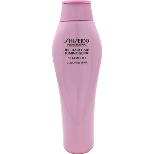

返回列表
产品名称：ザ・ヘアケア ルミノジェニック シャンプー

資生堂プロフェッショナル ザ・ヘアケア ルミノジェニック シャンプー ２５０ｍｌ
メーカー 資生堂プロフェッショナル
JANコード 4524120168601
商品の特徴
カラーヘア用
- 成分・分量
- ＜成分＞
水，ココイルメチルタウリンNa，コカミドプロピルベタイン，コカミドMEA，ジステアリン酸グリコール，ラウリルグリコール酢酸Na，塩化Na，ポリクオタニウム-10，アルギニン，ヒドロキシエチルウレア，乳酸，ポリクオタニウム-11，グリチルリチン酸2K，レシチン，加水分解コムギタンパク，加水分解コムギデンプン，チオタウリン，褐藻エキス，紅藻エキス，オノニスエキス，シソエキス，緑藻エキス，セテアレス-60ミリスチルグリコール，クエン酸，ポリウレタン-46，エタノール，EDTA-2Na，ポリクオタニウム-47，BG，乳酸アンモニウム，安息香酸Na，フェノキシエタノール，香料
- 用法及び用量
- 濡らした髪に塗布し、やさしく泡立てます。その後、十分にすすいでください